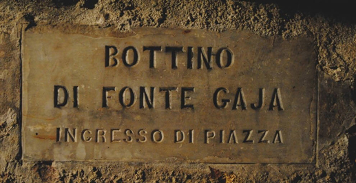

|
| |
Fu dal 1400 che si iniziò la registrazione degli allacciamenti privati ai bottini, dato che spettava ai cittadini pagare le spese di scavo.
Infatti, questa era l'unica forma di pagamento che il Comune di Siena pretendeva da chi si collegava ai bottini; fino al 1500 a Siena non vi era traccia di nessuna tassa per l'erogazione dell'acqua che era quindi gratuita per tutti.

Soltanto a partire dal 1590 i cittadini con allacciamenti privati ai bottini dovettero iniziare a pagare il comune per il servizio dell'acqua, tassa da cui erano esentati i religiosi.
Nel secolo successivo, ovvero nel 1600, il numero di allacciamenti crebbe in maniera esponenziale e siccome la prevenzione contro ogni forma di abusivismo non bastava, il gennaio 1691 la magistratura della Biccherna impose a tutti coloro che avevano pozzi di non intorbidirne le acque, di non deviarne il corso e di non prenderne mai più del dovuto.
Si passò poi ad un altra imposizione che prevedeva la chiusura di tutti i collegamenti con i bottini a meno che non si installasse, nel punto di congiunzione fra il gorello del bottino maestro e il proprio condotto, un misuratore per la regolazione della portata regolata dal magistrato della Biccherna.
Tale regolatore di flusso, altro non era che un semplice foro su una lastra di bronzo, che lasciava passare la portata prefissata di 344 litri/giorno ovvero 8 barili.
In questo modo nacque la prima tassa sulle acque, conosciuta all'epoca come "il dado" e che rimase in voga fino al XXI secolo.
In pratica gli utenti che volevano beneficiare dell'acqua nella loro cisterna, avrebbero dovuto presentarsi ad un addetto del comune con una lastra affinche venisse forata nel modo corretto e poi fissata dal capomastro comunale tra l'innesto del gorello e il condotto privato.
Oltre a tutto questo erano gli stessi utenti che dovevano mantenere in funzione e pulita la deviazione, dato che il calcare poteva limitare fortemente il flusso di acqua.
Bisogna sempre ricordare che i bottini avevano una funzione pubblica e non privata, quindi in periodi di forte siccità il comune poteva chiudere i condotti privati per alimentare le fonti della città e com'è facile capire queste interruzione generavano spesso violente proteste da parte dei cittadini.
Non bisogna scordare che in quel periodo la città era in forte crescita e lo erano anche i bisogni dei suoi cittadini, così potevamo avere cittadini che nella stessa fonte lavavano pellami, budella di animali, facevano abbeverare cavalli.
Insomma le acque bianche e quelle nere si mischiavano tra di loro e in caso di infrazione il dado poteva essere turato con un dito di creta.
|

 ACCADDE OGGI
ACCADDE OGGI